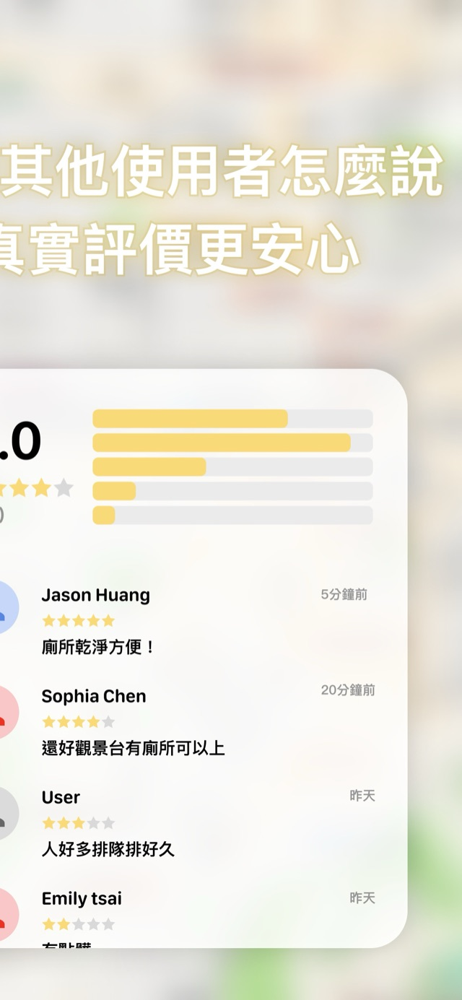

FindToilets 找廁所 · 公廁地圖
快速找到附近適合的公共廁所
打開就定位，依距離列出附近公廁，還能看環境部評等、無障礙與親子設施。資料來自政府公開資料與使用者的真實評價，旅遊、通勤、帶小孩出門都派得上用場。
免費下載 · iPhone · 支援中・英・日・韓

核心功能
急的時候，不用碰運氣
打開就知道最近的在哪
GPS 定位後依距離排序附近公廁，附步行時間估計；一鍵接力 Apple 或 Google 地圖導航。
評等與設施一眼看清
顯示環境部公廁評鑑等級，以及無障礙廁所、親子廁所、尿布台與樓層資訊。
篩選你需要的
依場所類型（車站、百貨、公園⋯）、距離、評等與男廁／女廁／親子／無障礙篩選，還有 24 小時開放的推估標示。
真實評價與回報
使用者可以替地點評分、留下評語，並回報現場狀況（缺衛生紙、維修中⋯），幫助下一個有需要的人。
資料來源
全臺公廁資料，持續更新
公廁資料來自環境部公開資料集，涵蓋全臺超過一萬個公廁地點（百貨、車站、公園、政府機關等），App 會定期同步最新資料，再加上使用者的現場回報。
常見問題
FAQ
找廁所 App 是免費的嗎？
是。可以免費下載並使用完整的搜尋、地圖與評價功能；App 內會顯示少量廣告。
App 裡的廁所資料從哪裡來？
公廁資料來自環境部公開的全臺公廁資料集，App 會定期同步更新；營業時間等補充資訊來自公開地圖服務與使用者回報。
可以查看無障礙或親子設施嗎？
可以。每個地點會顯示無障礙廁所、親子廁所與尿布台資訊，也可以只篩選有這些設施的地點。
支援哪些語言？
支援繁體中文、英文、日文、韓文四種語言，適合在台灣旅遊的外國旅客使用。
沒有網路時能用嗎？
公廁資料內建並快取在裝置上，網路不穩時仍能瀏覽附近清單與地點資訊；地圖底圖與最新評價的載入需要網路。
如何回報錯誤或最新狀況？
在地點頁留下評價時可以一併回報現場狀況（例如缺衛生紙、維修中）；資料錯誤也歡迎寫信給開發者。
信任與支援
隱私、支援與下載
隱私政策
找廁所的定位與評價資料處理方式，寫在專屬隱私政策。
查看找廁所隱私政策
支援
資料錯誤回報與使用問題，來信必回。
寫信給開發者
App Store
正式名稱：FindToilets 找廁所｜附近廁所地圖工具
前往 App Store 頁面